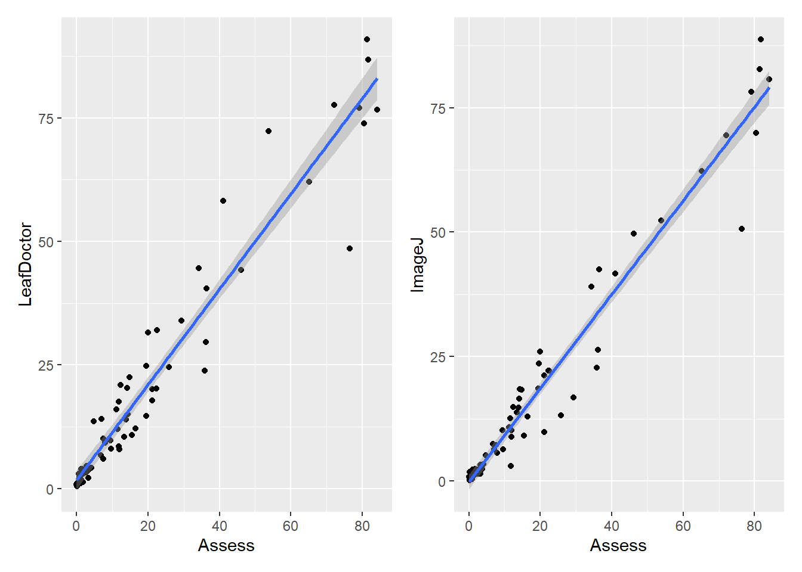
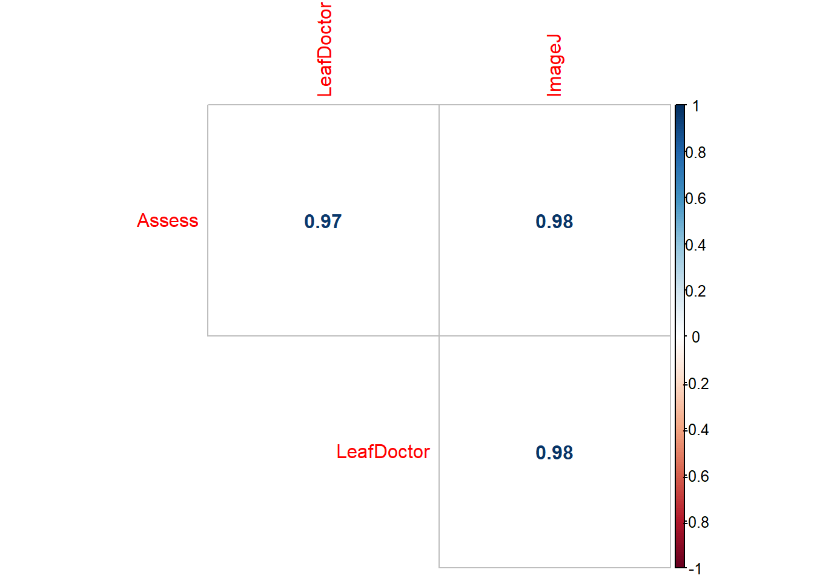
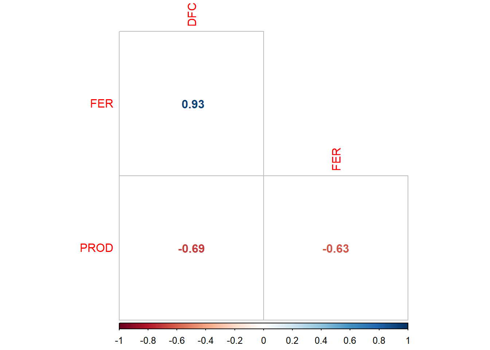
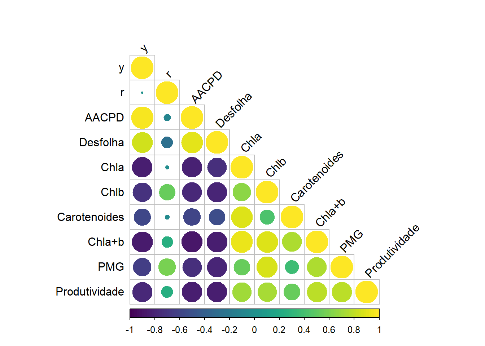

library(gsheet)
library(tidyverse)
library(patchwork)
library(AgroR)
library(DT)
library(corrplot)Análise de Correlação
A análise de correlação é uma técnica estatística usada para medir e descrever a força e a direção da relação linear entre duas variáveis quantitativas. Essa análise é fundamental em muitas áreas da ciência, incluindo estatística, economia, biologia, psicologia e ciências sociais, pois permite identificar se e como as variáveis estão relacionadas. O coeficiente de correlação é um número que quantifica a relação entre duas variáveis. Ele varia entre -1 e 1, sendo 1 muito correlacionadas positivamente, e -1, correlacionadas negativamente. O coeficiente mais comuns é coeficiente de correlação de Pearson.
Carregamento dos pacotes
Vamos considerar o software “Assess” como o padrão de quantificação de severidade de doença. Vamos realizar gráficos de correlação entre ele e os outros softwares, “LeafDoctor” e “ImageJ”. O objetivo é verificar se os métodos possuem correlação, e se essa será positiva ou negativa.
Exemplo 1
Carregando os dados
corr <- gsheet2tbl("https://docs.google.com/spreadsheets/d/1bq2N19DcZdtax2fQW9OHSGMR0X2__Z9T/edit#gid=373270992")
datatable(corr)Plot dos gráficos
g1 <- corr %>%
ggplot(aes(Assess, LeafDoctor))+
geom_point()+
geom_smooth(method = "lm")
g2 <- corr %>%
ggplot(aes(Assess, ImageJ))+
geom_point()+
geom_smooth(method = "lm")
g1|g2
Os gráficos indicam que há uma correlação positiva entre os Softwares.
Gráfico de variabilidade entre os softwares
corr %>%
pivot_longer(3:5, names_to = "method",
values_to = "value") %>%
ggplot(aes(method , value))+
geom_boxplot()
Determinação dos coeficientes de correlação de Pearson
Se utilizando da função nativa do R cor.test, obtêm-se os coefiente de correlação de Pearson.
cor.test(corr$Assess, corr$LeafDoctor)
Pearson's product-moment correlation
data: corr$Assess and corr$LeafDoctor
t = 31.119, df = 68, p-value < 2.2e-16
alternative hypothesis: true correlation is not equal to 0
95 percent confidence interval:
0.9466882 0.9792005
sample estimates:
cor
0.9666367 cor.test(corr$Assess, corr$ImageJ)
Pearson's product-moment correlation
data: corr$Assess and corr$ImageJ
t = 38.383, df = 68, p-value < 2.2e-16
alternative hypothesis: true correlation is not equal to 0
95 percent confidence interval:
0.9642331 0.9861219
sample estimates:
cor
0.9776918 Gráficos para apresentar os coeficientes de correlações
Com AgroR:
corr %>%
dplyr::select(3:5) %>%
corgraph() Var1 Var2 cor p
2 LeafDoctor Assess 0.9666367 5.972544e-42
3 ImageJ Assess 0.9776918 8.143613e-48
6 ImageJ LeafDoctor 0.9797478 3.144091e-49
corr2 <- corr %>%
dplyr::select(3:5)
corgraph(corr2) Var1 Var2 cor p
2 LeafDoctor Assess 0.9666367 5.972544e-42
3 ImageJ Assess 0.9776918 8.143613e-48
6 ImageJ LeafDoctor 0.9797478 3.144091e-49
Com corrplot:
corr2_1 <- cor(corr2)
corrplot(corr2_1, method = "square", type = "upper")
O argumento diag = FALSE remove a comparação dentro de um mesmo método, por exemplo, Assess com Assess.
corrplot(corr2_1, method = "number", type = "upper", diag = FALSE)
Exemplo 2
Carregando os dados
campo <- gsheet2tbl("https://docs.google.com/spreadsheets/d/1bq2N19DcZdtax2fQW9OHSGMR0X2__Z9T/edit#gid=866852711")
campo2 <- campo |>
dplyr::select(DFC, FER, PROD)
datatable(campo2)Gráficos para apresentar os coeficientes de correlações
Com corgraph
corgraph(campo2) Var1 Var2 cor p
2 FER DFC 0.9316978 9.864101e-15
3 PROD DFC -0.6928161 1.110652e-05
6 PROD FER -0.6258321 1.277444e-04
Com corrplot
campo2_1 <- cor(campo2)
campo2_1 %>% corrplot(method = "number", type = "lower", diag = FALSE)
Comparação de correlações
cor.test(campo2$PROD, campo2$DFC)
Pearson's product-moment correlation
data: campo2$PROD and campo2$DFC
t = -5.2623, df = 30, p-value = 1.111e-05
alternative hypothesis: true correlation is not equal to 0
95 percent confidence interval:
-0.8388581 -0.4537361
sample estimates:
cor
-0.6928161 cor.test(campo2$PROD, campo2$FER)
Pearson's product-moment correlation
data: campo2$PROD and campo2$FER
t = -4.3949, df = 30, p-value = 0.0001277
alternative hypothesis: true correlation is not equal to 0
95 percent confidence interval:
-0.7999565 -0.3544981
sample estimates:
cor
-0.6258321 Avalia-se os intervalos de confiança obtidos (IC da correlação entre PROD e DFC vs. IC da correlação entre PROD e FER) e caso não haja sobreposição de intervalos, as correlações diferem estatisticamente.
Exemplo 3
Importação dos dados
dados <- gsheet2tbl("https://docs.google.com/spreadsheets/d/1t1oOnimLXdx6rqtDiYg6wNXB2byY8_Z-/edit?gid=1891383351#gid=1891383351")
datatable(dados)Matriz de correlação
cor1 <- dados[,4:13]
corelacao1 <- cor(cor1)
datatable(corelacao1)Plot do Gráfico de Corrrelação
Usando o pacote ´corrplot´
# Crição de uma paleta de cores usando a paleta viridis
library(viridis)
viridis_colors <- viridis(100)
# Plot da matriz de correlação usando a paleta viridis
corrplot(corelacao1, type = "lower", col = viridis_colors, tl.col = "black", tl.srt = 45)